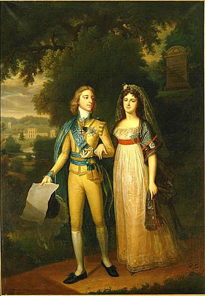
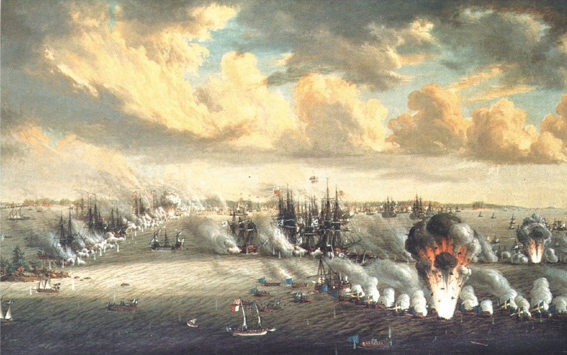
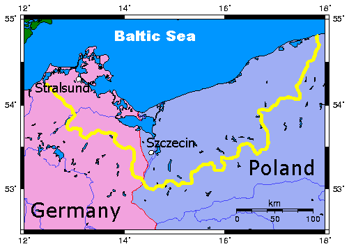
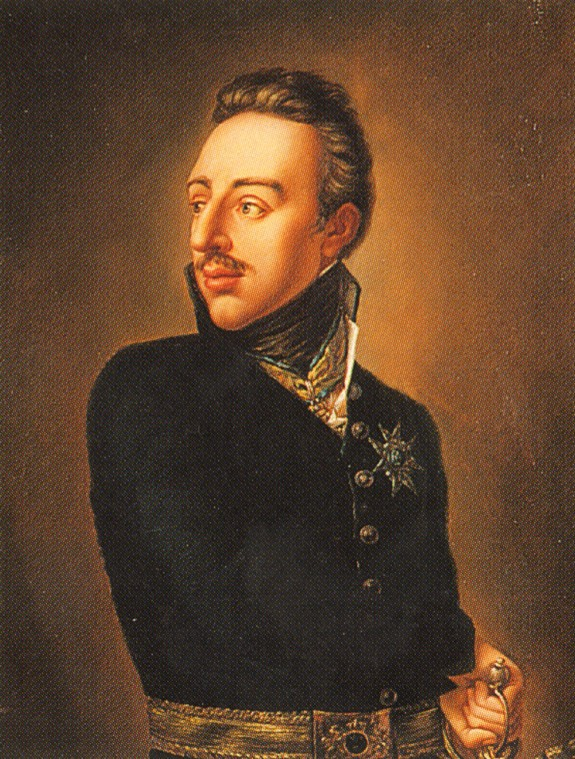
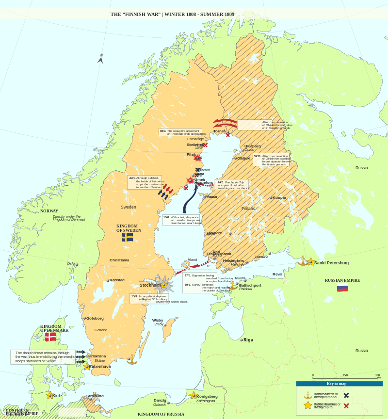
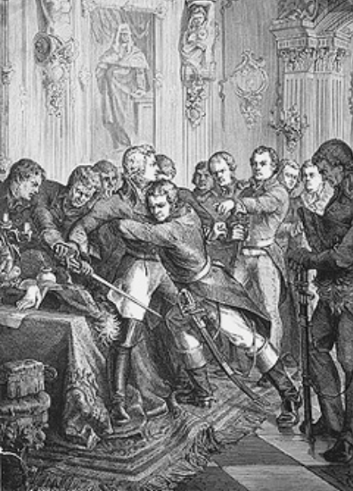

스톡홀름의 프랑스 왕 (2편) - 북구의 외톨이
게시: 2018-07-02T06:30:00+09:00
1796년, 구스타프 4세 아돌프는 18세가 되어 삼촌인 카알 13세의 섭정 통치에서 벗어나 귀족들의 기대를 받으며 정식으로 왕좌에 올랐습니다. 그는 종교상의 이유로 러시아 대공녀를 거부하고 독일 바덴(Baden) 대공의 손녀인 도로테아(Friederike Dorothea)와 결혼했는데, 이는 좋든 싫든 러시아와 협력해야만 했던 스웨덴의 처지에서 좋은 선택은 아니었습니다. 그럼에도 불구하고 일단 러시아와의 협력에는 별 문제가 없었습니다. 이유는 프랑스 때문이었지요. 당시 자코뱅들에 의한 혁명이 한창 진행 중이던 프랑스에 대한 증오심은 구스타프 4세와 러시아의 짜르 파벨 1세(Pavel I)가 함께 가지는 것이었거든요.

(구스타프 4세와 도로테아의 단란한 신혼 시절... 이들을 결속시킨 것이 애정보다는 권력이었다는 것은 구스타프가 왕위를 잃으면서 금방 드러납니다.)
하지만 구스타프 4세의 내치는 귀족들로 구성된 의회(Riksdag)의 기대와는 달리 그다지 잘 흘러가지 못했습니다. 그는 지금은 유럽의 위기 상태로서 자코뱅들의 위협으로부터 유럽 전체를 구원해야 한다는 강박증이 심했는지 정식 대관식도 몇 년 미루었을 뿐만 아니라 내각 구성조차 하지 않았습니다. 그러나 알고 보면 그런 건 다 핑계였고, 그는 아버지를 암살한 귀족들로 구성된 의회와 협력할 생각이 애초에 전혀 없었던 것입니다. 그는 즉위 이후 몇 년간 의회를 소집하지 않았습니다. 자기들 잇속 챙기기에 열중이던 귀족들을 상대하기 싫었던 것이지요.
하지만 귀족들로 이루어진 의회가 스웨덴의 실권을 70년 이상 장악하고 있던 이유가 있었습니다. 세금 문제에 대한 권한이 의회에 있다보니, 국가 재정을 위해서는 결국 의회와의 타협은 불가피했습니다. 특히 구스타프 4세는 등극 이전부터 원죄나 다름없는 재무상의 문제를 가지고 있었습니다. 그의 아버지 구스타프 3세가 1790년 스벤스크순드(Svensksund) 해전에서 러시아를 상대로 수십년 만에 빛나는 승리를 거둔 것까지는 좋았으나, 그 전쟁 비용 조달 문제로 심각한 국가 부채가 쌓여 있었던 것입니다. 거기에 한술 더 떠 1798년~99년에 연달아 흉작이 계속되자 더 이상 버틸 수가 없었던 구스타프 4세는 1800년 초 결국 의회를 소집하게 됩니다. 여기서라도 이야기가 잘 되었으면 좋았겠으나, 이 순간만을 기다렸다는 듯이 귀족들이 의회에서 국왕을 향해 온갖 시비를 걸어대자 그는 두 번 다시 의회를 소집하지 않았습니다.

(핀란드 해역에서 벌어진 스벤스크순드 해전의 모습입니다. 이 전투에서 양측은 각각 250여척 씩의 함정을 동원했고, 이는 지금까지도 단순히 함정 수로만 따졌을 때 발트해 최대의 해전이라는 기록을 유지하고 있습니다. 이 전투에서 스웨덴 측은 6척을, 러시아는 50~80척을 잃었습니다. 그러나 구스타프 3세는 이런 승리를 거두고도 추격에 의한 전과 확대를 꾀하지 못해 결국 전쟁 배상금도 받아내지 못했고, 이때의 전쟁 비용은 아들 대에서 큰 재무적 부담으로 작용했습니다.)
요약하면 당시 스웨덴 왕가를 좌지우지할 세력은 러시아와 스웨덴 의회였는데, 구스타프 4세는 이 둘 모두와 아슬아슬한 관계에 있었습니다. 이런 위태로운 상황이 언제까지 평온하게 갈 수는 없었고, 결국 올 것이 온 때는 1805년이었습니다. 그러나 모든 악운은 처음에는 얼굴에 미소를 띠고 찾아오는 모양입니다. 혁명 프랑스를 혐오하며 반프랑스 연합에 자처하여 뛰어들었던 구스타프 4세에게 1805년 하반기는 기다리던 절호의 기회가 한꺼번에 찾아든 운수 좋은 시기였습니다. 제3차 대불 동맹 전쟁이 벌어졌고, 거기에는 영국과 오스트리아 뿐만 아니라 스웨덴의 이웃인 러시아까지 뛰어들었던 것입니다. 구스타프 4세는 '드디어 하늘이 스웨덴을 돕는다'라고 외치며 냉큼 거기에 참전했습니다. 그러나 다들 아시다시피, 1805년 겨울 나폴레옹은 아우스테를리츠에서 빛나는 승리를 거두며 유럽의 지배자로 우뚝 섰습니다.

(포메라니아는 현재 독일과 폴란드에 걸쳐 있는 지역으로서, 30년 전쟁을 거친 뒤 1648년 브란덴부르크 공국, 즉 프로이센과 스웨덴 왕국이 이 지역을 쪼개어 가졌습니다. 1807년에 나폴레옹이 점령했던 이 지역은 스웨덴이 소금 이외에는 아무것도 수입하지 않는다는 조건으로 1810년 스웨덴에 반환되었습니다.)
그러나 구스타프 4세는 완전히 절망에 빠지지는 않았습니다. 러시아는 아직 건재했고 프로이센은 아직 싸움에 끼지도 않았는데다, 자신의 친척이라고 할 수 있는 덴마크도 건재했으므로 발트해 너머에 있는 스웨덴이 나폴레옹의 먹이감이 될 일은 없다고 생각했기 때문입니다. 그런 믿음이 한꺼번에 무너지는데는 불과 2년이 걸렸습니다. 1806년에 시작된 제4차 대불 동맹 전쟁의 결과는 잘 아실 겁니다. 프로이센과 러시아는 차례로 나폴레옹에게 탈탈 털리고 말았고, 난데없이 영국 해군이 나폴레옹으로부터 덴마크 함대를 보호하겠다는 핑계로 1807년 덴마크 코펜하겐을 습격하는 바람에 덴마크가 나폴레옹 측에 철썩 붙어버리게 되었습니다. 특히 스웨덴을 멘붕에 빠뜨린 것은 1807년 틸지트(Tilsit) 회담이었습니다. 여기서 러시아의 젊은 차르 알렉산드르는 영웅 나폴레옹의 매력에 흠뻑 빠져 프랑스의 동맹이 되어버린 것입니다. 삽시간에 스웨덴은 차가운 북극인 북쪽을 제외하고는 동서남쪽 모두가 적국으로 둘러싸이는 신세가 되었습니다. 당시 노르웨이는 덴마크의 영토였거든요. 별 상관도 없는 전쟁에 공연히 끼어들었던 스웨덴은 발트해 너머 가지고 있던 큼직한 영토인 포메라니아(Pomerania)를 잃어야 했습니다.

(구스타프 4세 아돌프의 정식 초상화입니다. 저렇게 칼자루를 쥔 채로 그린 모습을 주문한 것을 보면, 그의 성격을 짐작할 수 있습니다. 보통 꼭 힘도 용기도 없는 사람이 전쟁을 무서워 하지 않는 법입니다.)
스웨덴의 진짜 고난은 바로 다음 해인 1808년에 시작되었습니다. 나폴레옹의 사주를 받은 러시아가 스웨덴을 침공한 것입니다. 표면적인 대의명분은 나폴레옹이 주도하는 대륙봉쇄령 체제에 스웨덴을 끌어들이기 위해서라는 것이었지만, 사실 러시아로서는 굳이 나폴레옹의 꼬드김이 없었어도 스웨덴을 침공했을 것입니다. 러시아는 항상 스웨덴의 식민지인 핀란드를 탐내고 있었거든요. 부왕이 남겨둔 부채에다 의회와의 불화로 인해 재정 상태도 엉망이었던 구스타프 4세에게 강력한 군대가 있을리 없었고, 불과 몇 개월만에 핀란드 대부분은 러시아가 점령해버렸습니다. 불과 100년 전만 해도 러시아 따위가 똑바로 쳐다볼 수도 없었던 북구의 강자 스웨덴에게는 너무나도 굴욕적인 순간이었습니다. 그리고 공연히 나대다가 이 불필요한 굴욕을 굳이 불러들인 장본인이 바로 구스타프 4세 아돌프 본인이었습니다.

(1808년 겨울부터 1809년 여름 사이의 핀란드 전쟁 상황도입니다.)
가뜩이나 구스타프 4세에 대한 불만이 많았던 의회의 스웨덴 귀족들은 더 참을 수가 없었습니다. 더군다나 불과 17년 전에 그의 아버지도 같은 방식으로 처리한 선례가 있었으니, 그 아들을 처리하는 것을 망설일 필요가 없었습니다. 1809년 3월, 스웨덴의 군항 칼슈타트(Karlstad)에서 반란이 일어나 수도 스톡홀름으로 진격을 시작했습니다. 반란군이 도착하기도 전에, 일단의 귀족들이 스톡홀름의 스웨덴 왕궁을 습격하여 구스타프 4세를 그의 가족들과 더불어 체포하고 감금했습니다. 이 귀족들은 그의 섭정이던 카알 공작을 설득해 임시 정부의 수반을 맡도록 했고, 그를 결국 카알 13세(Karl XIII)로 추대합니다. 이와 더불어, 귀족들은 이 취약한 왕정에게 1719년 정부 기구법보다 더 많은 권력을 의회에게 양보하고 언론 자유를 보장하는 1809년 정부 기구법을 강요하여 서명하게 합니다. 1772년 구스타프 3세의 친위 쿠데타로 권력을 빼앗긴 의회가 다시 권력을 되찾아오는 순간이었습니다.

(구스타프 4세 아돌프의 체포 장면입니다. 쿠데타로 잡은 권력은 쿠데타로 잃는다는 아주 좋은 예입니다.)
쫓겨난 구스타프 4세는 독일로 옮겨졌다 이혼하고 결국 구스타프손(Gustafsson) 대령이라는 이름으로 스위스의 상트 갈렌(St. Gallen)의 작은 호텔에서 고독과 분노 속에 여생을 보냈습니다. 그는 여기서 심장마비로 58세의 나이로 1837년 사망했습니다.
여기서 대부분의 문제가 다 해결된 것처럼 보였습니다만, 그렇지 않았습니다. 즉위 당시 이미 61세로서 연로했던 카알 13세는 자식이 없었습니다. 젊을 때 2명의 아이를 낳기는 했으나, 모두 어릴 때 병사했던 것입니다. 왕정이란 후손이 없으면 존속할 수가 없는 것입니다. 그리고 외교적 고립과 패전에 더해, 쿠데타의 혼란까지 겹쳐진 스웨덴의 사정상, 차기 국왕 후계자를 정할 때 홀슈타인-고톱 왕가와 의회 간의 팽팽한 대립 관계는 물론 프랑스와 러시아 등의 외세까지 고려하지 않을 수 없었습니다. 카알 13세 본인 뿐만 아니라 스웨덴 의회 전체가 차기 국왕 후계 적임자를 찾아 나섰습니다. 2명이 곧 물망에 오릅니다. 그런데 그 중 한 명은 정말 의외의 인물이었고, 이 사람을 추천한 귀족은 궁정의 분노를 사 체포되는 사태까지 일어나게 됩니다.
To be continued...
Source : The Life of Napoleon Bonaparte by William M. Sloane
https://en.wikipedia.org/wiki/Instrument_of_Government_(1809)
https://en.wikipedia.org/wiki/Instrument_of_Government_(1719)
https://en.wikipedia.org/wiki/Gustav_IV_Adolf_of_Sweden
https://en.wikipedia.org/wiki/Charles_XIII_of_Sweden
https://en.wikipedia.org/wiki/Charles_XIV_John_of_Sweden
https://en.wikipedia.org/wiki/Gustav_III_of_Sweden
https://en.wikipedia.org/wiki/Finnish_War